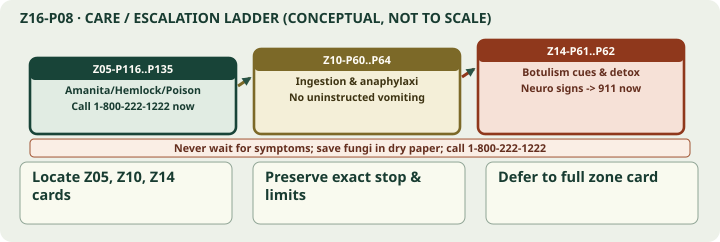

Z16-P08 · Field reference atlas · New manuscript
Plant, Berry and Wild Mushroom Poison Emergency Cross-Reference
Link Z05 lethal lookalikes, Z10 toxicology first response, and Z14 botulism red flags to immediate 1-800-222-1222 and 911 escalation.
When it applies · Any suspected ingestion of unknown plants, berries, roots, wild mushrooms, or suspect home-canned foods.
Equipment · Full offline reader (Z05, Z10, Z14), primary zone cards, and local emergency and agency references.

Actions
- Call 911 immediately for airway swelling, breathing difficulty, seizures, confusion, vision, swallowing trouble, or collapse; call Poison Help (1-800-222-1222) at once for ANY suspected plant or mushroom ingestion without waiting for symptoms (Z05-P135, Z10-P61).[A09, B09, M19]
- Preserve delayed-onset red alerts: 6–24 hour GI onset with a deceptive day-two lull signals potentially fatal amatoxin poisoning (Amanita, Galerina, Z05-P133), while blurred vision, slurred speech, or swallowing trouble after preserved foods signals botulism emergency (Z14-P61).[A03, B06, P23]
- Save uneaten plant or mushroom pieces in dry paper bags (never sealed plastic, Z05-P134) and never induce vomiting uninstructed or open suspect bulging canning jars (Z14-P62).[A09, B08, P23]
Failure recognition · Waiting for symptoms to worsen, sealing mushrooms in plastic, or tasting suspect canned food leads to preventable organ failure or respiratory paralysis.[B06, B08, P23]
Verify · 911 vs 1-800-222-1222 pathways, dry-paper specimen retention, and zero uninstructed emetics are preserved intact.[B08, B09, P23]
Stop or change course · Stop all field activity and seek emergency clinical evaluation immediately after any suspected toxic plant, mushroom, or botulism exposure.[B09, P23]
Evidence and editorial notes
- A03 · CDC · How to Make Water Safe in an Emergency (2024-09-19)
- Section: Cross-zone public-health, water, medicine, and sanitation linkage · Conditions: Indexing Z04, Z10, Z13, and Z14 hygiene, boiling, and clinical red flags
Support: Cross-referencing water treatment, wound care, cold-chain food safety, and poison escalation preserves consistent public-health thresholds across zones.
Limitations: Condensed tables never authorize skipping altitude boiling rules, chemical-source rejection, or clinician evaluation. · Conflicting evidence: None noted.
Editorial note: Prevents cross-zone public-health drift. · Specialist reviewer: Public-health reviewer
Primary source · checked 2026-11-24 - A09 · Minnesota Poison Control System · Poison Help 1-800-222-1222 and Regional Plant/Mushroom Guidance (Current web edition)
- Section: Consolidated emergency communication, reporting, and referral directory · Conditions: Cross-zone emergency escalation across Z01, Z05, Z06, Z07, Z10, Z11, Z13, Z15
Support: Emergency lookup tables separate 911 life-threat activation, Poison Help 1-800-222-1222, utility leak/outage lines, and DNR wildlife/TIP reporting.
Limitations: Cell coverage fails in remote areas; pre-plan offline communication and backup evacuation routes. · Conflicting evidence: None noted.
Editorial note: Standardizes Z16 emergency contact index. · Specialist reviewer: EMS and emergency communications reviewer
Primary source · checked 2026-11-25 - B06 · CDC MMWR · Notes from the Field: Severe Mushroom Poisoning — Minnesota 2018 (MMWR 68(21))
- Section: Minnesota severe mushroom poisoning outbreak (MMWR 68:21) · Conditions: Wild mushroom foraging and lookalike misidentification in Minnesota
Support: Foragers in Minnesota suffered severe hepatotoxic poisoning after mistaking lethal amatoxin-containing mushrooms for familiar edible species.
Limitations: Delayed gastrointestinal onset (6-24+ hours) followed by a false recovery phase precedes liver failure; treat any wild mushroom ingestion with symptoms as a medical emergency. · Conflicting evidence: None noted.
Editorial note: Critical Minnesota fungal hazard evidence. · Specialist reviewer: Medical toxicologist and mycologist
Primary source · checked 2026-11-25 - B08 · North American Mycological Association · Mushroom Poisoning Syndromes Reference (Current web edition)
- Section: Mushroom poisoning syndrome classes and specimen retention · Conditions: Evaluating suspected wild fungal exposure
Support: Mushroom toxins span distinct syndromes (amatoxins, gyromitrin, orellanine, muscarine, ibotenic acid, GI irritants) with onset from minutes to days.
Limitations: Save remaining uneaten mushroom pieces in a paper bag (not sealed plastic) for mycologist identification if exposure occurs, and call Poison Control immediately. · Conflicting evidence: None noted.
Editorial note: Grounds Z05 fungal toxicology & emergency referral. · Specialist reviewer: Mycology toxicology reviewer
Primary source · checked 2026-11-25 - B09 · Minnesota Poison Control System · Poison Help 1-800-222-1222 and Regional Plant/Mushroom Guidance (Current web edition)
- Section: Minnesota Poison Control 1-800-222-1222 immediate referral · Conditions: Any suspected toxic plant, berry, root, or mushroom ingestion or severe dermal exposure
Support: Call 1-800-222-1222 immediately (or 911 for breathing difficulty, collapse, seizures, or altered alertness); do not wait for delayed symptoms.
Limitations: Never induce vomiting or administer home remedies unless explicitly instructed by Poison Control or EMS. · Conflicting evidence: None noted.
Editorial note: Mandatory Z05 poison-response escalation. · Specialist reviewer: Clinical toxicologist / Poison Center
Primary source · checked 2026-11-25 - M19 · NIH / MedlinePlus · Bleeding (current web edition)
- Section: Internal Bleeding, Nosebleed, and Dressing Monitoring · Conditions: External vs suspected internal hemorrhage and severe epistaxis
Support: For routine nosebleed, sit upright leaning slightly forward and pinch the soft part of the nose continuously; escalate urgently for uncontrolled bleeding, coughing/vomiting blood, abdominal rigidity, or dizziness.
Limitations: Tilting the head backward causes blood swallowing and airway irritation. · Conflicting evidence: None; distinguishes minor nosebleed from internal-bleeding emergencies.
Editorial note: Supports bleeding sub-scenarios and recheck cadence. · Specialist reviewer: Emergency medicine and EMS
Primary source · checked 2026-11-24 - P23 · CDC · Symptoms of Botulism (2024)
- Section: Foodborne botulism signs and urgent action · Conditions: Possible ingestion of suspect preserved food, particularly with neurologic symptoms
Support: Trouble swallowing or breathing, vision changes or weakness can indicate a medical emergency. Seek immediate emergency care for compatible symptoms.
Limitations: Symptoms alone cannot establish a diagnosis. Contact local public health or Poison Control for suspected exposures and disposal. · Conflicting evidence: See A02 claim audit for boundaries.
Editorial note: Added in A02 to separate a consequential source boundary. · Specialist reviewer: Public health and emergency medicine
Primary source · checked 2026-11-25
Source lineage · New manuscript (Z16 P20 emergency index) · Classification · New manuscript.